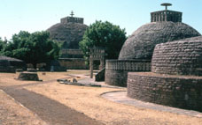
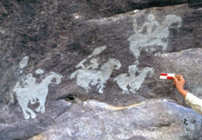

Department
of Oriental Antiquities > research
>
fieldwork > The
Vidisha Project
| 
Sanchi stupas 1 and 3, circa third century BCE to first century CE |
The Vidisha
research project is a multi-institutional project which focuses
on the Vidisha region in central India. Inter-disciplinary in approach, the aim of this project is to examine ancient Vidisha and the surrounding area through historical and human geography, religion, archaeology, epigraphy, architecture, and other facets of material culture. |
| 
Paintings from a rock shelter at Panguraria, circa second-first century BCE |
The results of this project will be published in articles and a monograph series, the first of which is Buddhist Reliquaries from Ancient India published by British Museum Press. |